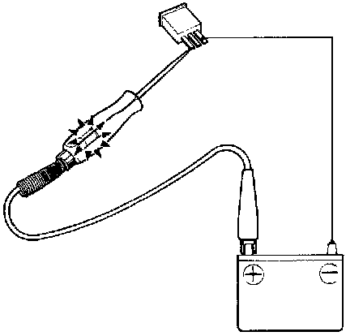
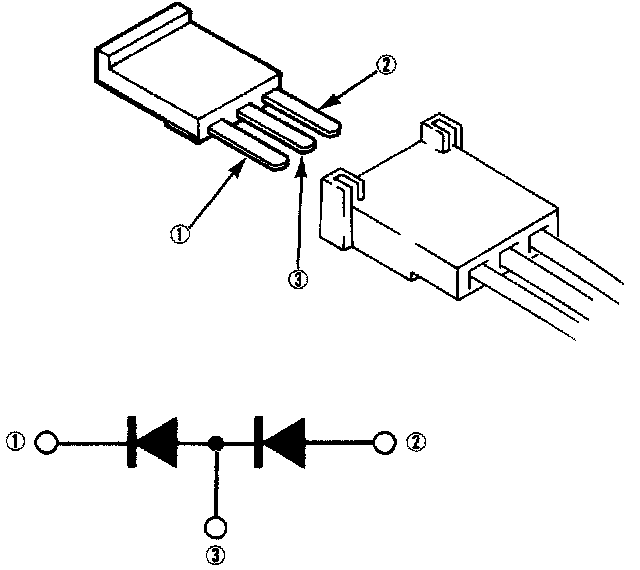

Compressor Clutch Diode HVAC: Testing and Inspection
DiodeNOTE: The diodes are designed to pass current in one direction and block current in opposite direction. Most ohmmeters, unless equipped with a diode tester, should not be used to test diodes.

1. Using an ohmmeter or continuity tester, check the diodes.
2. Diodes can be tested with a test light using the following procedure:
Connect the test light lead to the battery positive and a jumper lead to body ground.
The test light will come on when the diode passes current.

^ Check for continuity in both directions between 1 and 2 terminals, 1 and 3 terminals, and 3 and 2 terminals.
There should be continuity in only one direction.